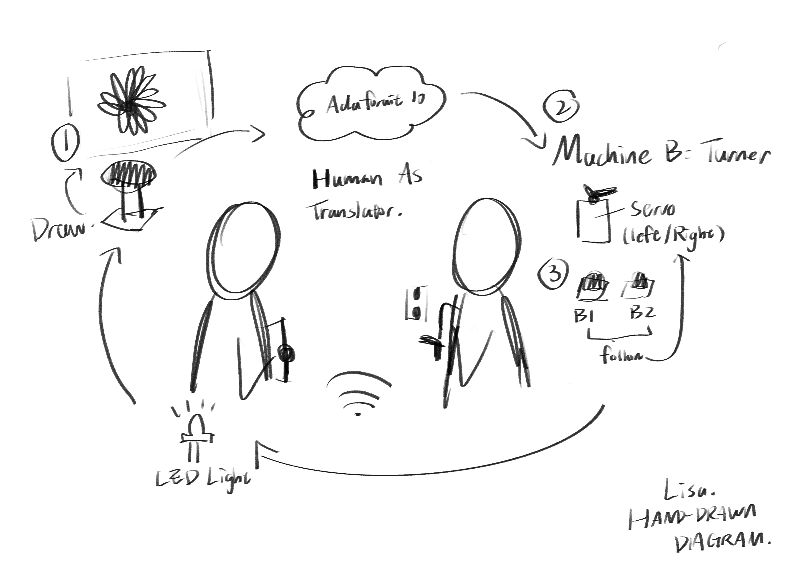

Wanderer & Turner is a communication system between two
electronic beings with different ways of perceiving and
expressing information. Wanderer experiences movement as
a continuous position in two-dimensional space, while
Turner translates spatial data into a limited set of
physical directions and speeds.
The two machines exchange messages through Adafruit IO,
but they do not share the same language. Humans observe
the machines' outputs and respond through physical actions,
which becomes part of the communication loop. With every
translation, some information is preserved and some
are lost.
03 / Communication Diagram

COMMUNICATION DIAGRAM
Replace with diagram.png · 16:9 recommended
Joystick → X,Y coordinates → Servo movement →
Human interpretation → Button response →
LED flashes → Joystick.
04 / Two WorldviewsPerception & Expression
Machine A Wanderer
Wanderer perceives a continuous two-dimensional
space through a joystick. Each movement shifts a
virtual pen.
A kaleidoscopic visualization makes these movements
visible.
At the end of a turn, Wanderer sends only the
pen's final X,Y coordinates (0–4095 for each axis),
not the complete drawing path.
INPUT / Joystick ·
OUTPUT / Coordinates + LED
Machine B Turner
Turner interprets the received coordinates as
three possible directions and three movement speeds.
Its servo translates the data into a physical gesture.
One participant observes the servo's direction and
responds using two buttons. The response represents
direction rather than the original coordinates
or speed.
INPUT / Coordinates + Buttons ·
OUTPUT / Servo
05 / Interaction RulesEncoding & Decoding
01 / Wanderer → Turner
Coordinates become movement
Wanderer sends the final pen position as X,Y.
Turner maps X to servo direction and Y to servo speed.
X range
Direction
0–1365
Left · 30°
1366–2730
Center · 90°
2731–4095
Right · 150°
Y range
Speed
0–1365
Slow
1366–2730
Normal
2731–4095
Fast
02 / Turner → Wanderer
Movement becomes a response
Once the servo stops, the participant observes
its direction and presses the corresponding button.
Observed direction
Button response
Left
Button 1
Center
Buttons 1 + 2
Right
Button 2
Wanderer decodes the button response into an LED
instruction.
03 / Completing the Loop
The participant at Wanderer reads the LED instruction
and moves the joystick again. The next final coordinate
begins another cycle. The system relies on turn-taking
rather than simultaneous conversation.
06 / Design DecisionsResponding to the Brief
Environment
Both devices stay in one place and rely on human interaction.
They are connected through Wi-Fi and Adafruit IO.
This allow them to exchange information with each other.
Different Worldviews
Wanderer works with continuous spatial positions,
Turner works with discrete directions and speeds.
The difference determines how each machine
interprets messages.
Transmission & Timing
Messages are exchanged intermittently at the end
of each turn. The devices take turns responding.
Perceptibility
The kaleidoscope, servo, buttons, and LED allow people
to see how the two machines communicate. However,
without knowing the rules, it can be difficult to
understand what each signal means.
Human Participation
Human participants are not simply viewers.We observe,
interpret, and act on machine outputs. Our responses become part of the communication loop.
07 / Process & IterationsDevelopment Notes
STAGE 01
Joystick & Spatial Drawing
We started by experimenting with the joystick to
control a virtual pen on a webpage. Instead of having
the pen return to the center when the joystick was
released, we wanted its position to accumulate over
time. This allowed each movement to leave a trace
and gradually build up the drawing.
STAGE 02
Kaleidoscope & Communication
After getting the joystick interaction to work,
we developed the drawing into a kaleidoscope effect.
We also started connecting the two ESP32 boards
through Adafruit IO so they could exchange data.
At this stage, we were mainly testing how the
information could be sent between the two machines
and how frequently they should communicate.
STAGE 03
Different Ways of Communicating
We wanted the two machines to communicate in
different ways rather than simply sending the
same information back and forth.
We first tried using rhythm and timing as a way for the two machines to communicate. However, we found that the delay in Adafruit IO made it difficult to keep the rhythm consistent. So we decided to use directions instead, allowing the coordinates to control the servo's movement.
STAGE 04
Follow the Servo
At first, I designed the two buttons as Accept
and Retry. However, I realized that these responses
didn't really tell the other machine what to do next.
We changed the interaction so that the participant
would observe the servo's direction and press the
corresponding button. This made the response more
directly connected to the information received
from Wanderer.
STAGE 05
Completing the Loop
Finally, we connected the button responses back
to Wanderer through LED flashes, which
the participant can interpret before moving the
joystick again.
We also adjusted the timing of each interaction
to make the turn-taking clearer. With this final
step, the two machines could continue exchanging
information through a complete communication loop.
08 / Lost in Translation
When we move the joystick, it creates a continuous drawing, but Wanderer only sends the final coordinates to Turner. Turner then translates them into the servo's direction and speed. When the participant presses a button to respond, only the direction is kept. This is then translated into LED flashes, so some of the original information is lost along the way.
For example, a final position of (3500, 800) becomes
a slow rightward servo movement. The participant presses
Button 2, which returns to Wanderer as three long LED
flashes. The next participant knows to move right,
but cannot reconstruct the original drawing.
The message returns, but not in its original form.
09 / Reflection
This project explores communication between beings
that do not perceive the world in the same way.
Although Wanderer and Turner can exchange data,
each interprets the message through its own limited
system of sensing and expression.
The human participants become translators within this
relationship. Rather than to reproduce a message,
the system sustains an exchange through
transformations. We came to see communication not simply
as accurate transmission, but as a process of interpretation
in which meaning changes along the way.